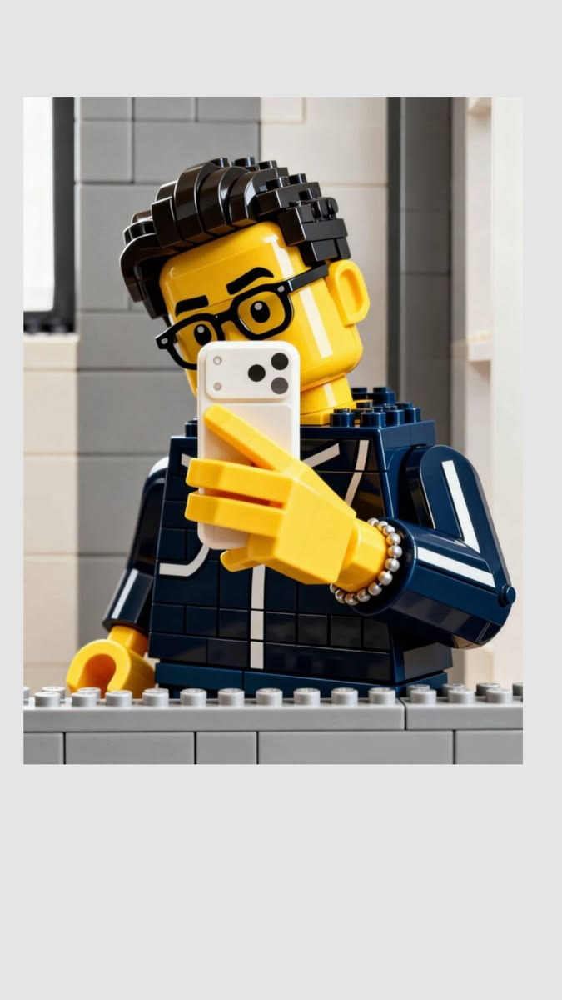

Universitas Muhammadiyah Malang
S1 Informatika
2024 — PresentData Science & AI Enthusiast
I am an Informatics student at Universitas Muhammadiyah Malang with a strong interest in Data Science, Artificial Intelligence, and software development.

I am an Informatics student at Universitas Muhammadiyah Malang with a strong interest in Data Science and Artificial Intelligence.
I enjoy learning new technologies, developing technical skills, and contributing to academic and student communities.
S1 Informatika
2024 — PresentClass of 2025
Represented the Google technology community and participated in technology and community activities.
Public Relations & Communication
Active member contributing to communication and community activities.
Laboratory of Informatics UMM
Supporting practical learning activities and assisting students during laboratory sessions.
Panti Wreda
Participated in social activities and elderly companionship.
A collaborative AI-powered research assistant designed to help analyze financial reports of companies listed on the Indonesia Stock Exchange.
View on GitHub →A collaborative desktop application developed to manage donation data and related transactions.
View on GitHub →A personal portfolio website built using semantic HTML and custom CSS with responsive layouts for different screen sizes.
View on GitHub →KUMPUL × Google.org
Universitas Muhammadiyah Malang
Interested in working together or just want to say hello? Feel free to reach out.